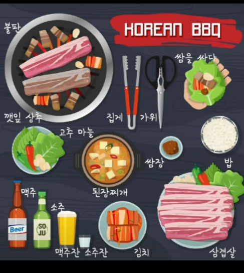

<!DOCTYPE html>
<html lang="zh-TW">
<head>
    <meta charset="UTF-8">
    <meta name="viewport" content="width=device-width, initial-scale=1.0">
    <title>🥩 KITTY 韓語餐廳與烤肉店點餐實戰樂園 (BBQ Ordering Battle Survival Guide)</title>
    <!-- Tailwind CSS CDN -->
    <script src="https://cdn.tailwindcss.com"></script>
    <!-- Font Awesome -->
    <link rel="stylesheet" href="https://cdnjs.cloudflare.com/ajax/libs/font-awesome/6.4.0/css/all.min.css">
    <!-- Google Fonts -->
    <link href="https://fonts.googleapis.com/css2?family=Fredoka:wght@400;500;600;700&family=Noto+Sans+TC:wght@400;500;700;900&family=Noto+Sans+KR:wght@500;700;900&family=Gaegu:wght@400;700&display=swap" rel="stylesheet">
    <!-- Canvas Confetti -->
    <script src="https://cdn.jsdelivr.net/npm/canvas-confetti@1.6.0/dist/confetti.browser.min.js"></script>
    <!-- React 18 & Babel CDN -->
    <script src="https://unpkg.com/react@18/umd/react.production.min.js" crossorigin></script>
    <script src="https://unpkg.com/react-dom@18/umd/react-dom.production.min.js" crossorigin></script>
    <script src="https://unpkg.com/@babel/standalone/babel.min.js"></script>
    
    <!-- 行動端與發音橋接 (KittyVoice) -->
    <script src="app_mobile_bridge.js"></script>
    <!-- 全域智慧搜尋引擎 -->
    <script src="kitty_search_engine.js"></script>

    <style>
        body {
            font-family: 'Fredoka', 'Noto Sans TC', sans-serif;
            background: linear-gradient(145deg, #FFFDF8 0%, #FFF5EB 35%, #FFF0F2 70%, #F8F4FF 100%);
            background-attachment: fixed;
            color: #2D3748;
            overflow-x: hidden;
        }
        .kr-font {
            font-family: 'Noto Sans KR', sans-serif;
        }
        .cute-font {
            font-family: 'Gaegu', 'Noto Sans TC', cursive, sans-serif;
        }

        /* 溫潤炭火與琥珀光暈背景 */
        .ambient-glow-1 {
            position: fixed;
            top: -10%;
            left: -8%;
            width: 45vw;
            height: 45vw;
            background: radial-gradient(circle, rgba(251, 146, 60, 0.18) 0%, rgba(255, 247, 237, 0) 70%);
            border-radius: 50%;
            pointer-events: none;
            z-index: 0;
            animation: glowFloat1 15s ease-in-out infinite alternate;
        }
        .ambient-glow-2 {
            position: fixed;
            bottom: -12%;
            right: -8%;
            width: 50vw;
            height: 50vw;
            background: radial-gradient(circle, rgba(244, 63, 94, 0.15) 0%, rgba(255, 241, 242, 0) 70%);
            border-radius: 50%;
            pointer-events: none;
            z-index: 0;
            animation: glowFloat2 17s ease-in-out infinite alternate-reverse;
        }

        @keyframes glowFloat1 {
            0% { transform: scale(0.95) translate(0, 0); opacity: 0.7; }
            50% { transform: scale(1.05) translate(20px, -15px); opacity: 0.95; }
            100% { transform: scale(0.98) translate(-10px, 18px); opacity: 0.8; }
        }
        @keyframes glowFloat2 {
            0% { transform: scale(1.02) translate(0, 0); opacity: 0.75; }
            50% { transform: scale(0.92) translate(-20px, 15px); opacity: 0.95; }
            100% { transform: scale(1.08) translate(15px, -20px); opacity: 0.7; }
        }

        .restaurant-card {
            background: rgba(255, 255, 255, 0.95);
            backdrop-filter: blur(16px);
            border: 2px solid rgba(251, 146, 60, 0.22);
            box-shadow: 0 10px 25px -5px rgba(234, 88, 12, 0.08), 0 4px 10px -2px rgba(0, 0, 0, 0.02);
            transition: all 0.28s cubic-bezier(0.4, 0, 0.2, 1);
        }
        .restaurant-card:hover {
            box-shadow: 0 18px 30px -5px rgba(234, 88, 12, 0.14), 0 8px 16px -4px rgba(0, 0, 0, 0.04);
            transform: translateY(-2px);
            border-color: rgba(249, 115, 22, 0.45);
        }

        .no-scrollbar::-webkit-scrollbar {
            display: none;
        }
        .no-scrollbar {
            -ms-overflow-style: none;
            scrollbar-width: none;
        }
    </style>
</head>
<body class="min-h-screen relative selection:bg-amber-200 selection:text-amber-900 text-gray-800">
    <div class="ambient-glow-1"></div>
    <div class="ambient-glow-2"></div>

    <div id="root" class="relative z-10"></div>

    <script type="text/babel">
        const { useState, useEffect, useMemo } = React;

        // 全域發音輔助函式
        const playVoice = (text, speed = 1.0) => {
            if (window.KittyVoice && typeof window.KittyVoice.speak === 'function') {
                window.KittyVoice.speak(text, speed);
            } else if ('speechSynthesis' in window) {
                window.speechSynthesis.cancel();
                const utterance = new SpeechSynthesisUtterance(text);
                utterance.lang = 'ko-KR';
                utterance.rate = speed;
                window.speechSynthesis.speak(utterance);
            }
        };

        // 發音按鈕組件 (支援 0.3x / 0.7x / 1.0x 三段速)
        const VoiceButtonGroup = ({ text, size = "md" }) => {
            const [activeSpeed, setActiveSpeed] = useState(null);

            const handlePlay = (speed) => {
                setActiveSpeed(speed);
                playVoice(text, speed);
                setTimeout(() => setActiveSpeed(null), 1200);
            };

            const btnBase = size === "sm" 
                ? "px-2 py-1 text-xs rounded-lg font-bold transition flex items-center gap-1 shadow-2xs"
                : "px-2.5 py-1.5 text-xs sm:text-sm rounded-xl font-bold transition flex items-center gap-1.5 shadow-2xs";

            return (
                <div className="inline-flex items-center gap-1.5 bg-amber-50/90 p-1 rounded-2xl border border-amber-200/80">
                    <button
                        onClick={() => handlePlay(0.3)}
                        title="0.3x 極慢速口型發音"
                        className={`${btnBase} ${activeSpeed === 0.3 ? 'bg-amber-500 text-white scale-105' : 'bg-white hover:bg-amber-100 text-amber-800'}`}
                    >
                        <i className="fas fa-turtle text-[11px]"></i>
                        <span>0.3x</span>
                    </button>
                    <button
                        onClick={() => handlePlay(0.7)}
                        title="0.7x 慢速聽力發音"
                        className={`${btnBase} ${activeSpeed === 0.7 ? 'bg-orange-500 text-white scale-105' : 'bg-white hover:bg-orange-100 text-orange-800'}`}
                    >
                        <span>0.7x</span>
                    </button>
                    <button
                        onClick={() => handlePlay(1.0)}
                        title="1.0x 道地標準發音"
                        className={`${btnBase} ${activeSpeed === 1.0 ? 'bg-rose-500 text-white scale-105' : 'bg-white hover:bg-rose-100 text-rose-800'}`}
                    >
                        <i className="fas fa-volume-up text-xs"></i>
                        <span>1.0x</span>
                    </button>
                </div>
            );
        };

        // 單字卡組件
        const WordCard = ({ item, onCopy }) => {
            return (
                <div className="restaurant-card rounded-3xl p-5 sm:p-6 flex flex-col justify-between relative overflow-hidden group">
                    {/* 頂部類別標籤與複製按鈕 */}
                    <div className="flex items-center justify-between gap-2 mb-3">
                        <span className="text-xs font-black px-2.5 py-1 rounded-full bg-amber-100 text-amber-900 border border-amber-300/80 flex items-center gap-1">
                            <span>{item.badgeIcon || '🥢'}</span>
                            <span>{item.categoryTitle}</span>
                        </span>
                        <button
                            onClick={() => onCopy(item.kr)}
                            className="text-gray-400 hover:text-amber-700 hover:bg-amber-100/70 p-1.5 rounded-lg transition"
                            title="複製韓文單字"
                        >
                            <i className="far fa-copy text-sm"></i>
                        </button>
                    </div>

                    {/* 核心韓文字與讀音 */}
                    <div>
                        <div className="flex items-baseline justify-between gap-2">
                            <h3 className="kr-font text-2xl sm:text-3xl font-black text-gray-900 tracking-tight">
                                {item.kr}
                            </h3>
                            {item.hanja && (
                                <span className="text-xs font-semibold text-gray-400 bg-gray-100 px-2 py-0.5 rounded-md">
                                    {item.hanja}
                                </span>
                            )}
                        </div>

                        {/* 讀音透視與粵語口訣 */}
                        <div className="mt-2 space-y-1">
                            <div className="flex flex-wrap items-center gap-2">
                                <span className="text-xs sm:text-sm font-bold text-amber-700 bg-amber-50 px-2 py-0.5 rounded-md border border-amber-200/60">
                                    讀音: {item.actualPron || `[${item.kr}]`}
                                </span>
                                {item.rom && (
                                    <span className="text-xs text-gray-500 font-medium">
                                        ({item.rom})
                                    </span>
                                )}
                            </div>
                            {item.cantonese && (
                                <div className="text-xs text-pink-700 font-semibold flex items-center gap-1">
                                    <span>🗣️ 粵語諧音:</span>
                                    <span className="bg-pink-50 px-1.5 py-0.5 rounded border border-pink-200">{item.cantonese}</span>
                                </div>
                            )}
                        </div>

                        {/* 中文意義 */}
                        <div className="mt-3 text-base sm:text-lg font-black text-gray-800 border-t border-amber-100/80 pt-2.5">
                            {item.zh}
                        </div>

                        {/* 文化情境與實戰提醒 */}
                        {item.tip && (
                            <p className="mt-2 text-xs sm:text-sm text-amber-900/80 bg-orange-50/70 rounded-xl p-2.5 border border-orange-200/60 leading-relaxed flex items-start gap-1.5">
                                <i className="fas fa-lightbulb text-amber-500 mt-0.5 shrink-0"></i>
                                <span>{item.tip}</span>
                            </p>
                        )}
                    </div>

                    {/* 底部 3 段速語音列 */}
                    <div className="mt-4 pt-3 border-t border-amber-100 flex items-center justify-between">
                        <span className="text-xs text-gray-400 font-bold">即時朗讀</span>
                        <VoiceButtonGroup text={item.kr} />
                    </div>
                </div>
            );
        };

        // 完整數據源定義 (8 大分類 + 烤肉桌圖解實境詞)
        const RESTAURANT_DATA = [
            // ================= 一、禮貌招呼與基本要求 =================
            {
                id: 'w1',
                catId: 'greet',
                categoryTitle: '招呼與基本要求',
                badgeIcon: '🙋',
                kr: '저기요',
                zh: '不好意思、老闆／服務生請留步',
                rom: 'Jeo-gi-yo',
                actualPron: '[저기요]',
                cantonese: '租 gi 喲',
                tip: '進店呼叫店員或在座位上舉手招呼的最道地萬能詞！比直接叫「아줌마 (大嬸)」更具禮貌與教養。'
            },
            {
                id: 'w2',
                catId: 'greet',
                categoryTitle: '招呼與基本要求',
                badgeIcon: '🙋',
                kr: '주세요',
                zh: '請給我',
                rom: 'Ju-se-yo',
                actualPron: '[주세요]',
                cantonese: '豬些喲',
                tip: '全韓國餐廳出現率 No.1 的萬能句型！只要「名詞 + 주세요」（例如：물 주세요 請給我水）就能點到任何東西。'
            },
            {
                id: 'w3',
                catId: 'greet',
                categoryTitle: '招呼與基本要求',
                badgeIcon: '🙋',
                kr: '감사합니다',
                zh: '謝謝您',
                rom: 'Gam-sa-ham-ni-da',
                actualPron: '[감사함니다]',
                cantonese: '錦沙含泥打',
                tip: '【鼻音化】終聲 ㅂ 遇到後方 ㄴ 時轉發 [ㅁ] 音！上菜、換烤盤或結帳時最親切的道謝。'
            },
            {
                id: 'w4',
                catId: 'greet',
                categoryTitle: '招呼與基本要求',
                badgeIcon: '🙋',
                kr: '하나 주세요',
                zh: '請給我一個',
                rom: 'Ha-na ju-se-yo',
                actualPron: '[하나 주세요]',
                cantonese: '哈拿 豬些喲',
                tip: '指著菜單上的菜餚說「이거 하나 주세요 (請給我這個一份)」是初學者秒上手的無痛點餐大絕招！'
            },

            // ================= 二、菜單與份量規格 =================
            {
                id: 'w5',
                catId: 'menu',
                categoryTitle: '菜單與份量規格',
                badgeIcon: '📋',
                kr: '메뉴판',
                hanja: '菜單板',
                zh: '菜單、價目表',
                rom: 'Me-nyu-pan',
                actualPron: '[메뉴판]',
                cantonese: 'menu 判',
                tip: '入座後若桌上沒有菜單，可以說「저기요, 메뉴판 좀 주세요 (不好意思，請給我一份菜單)」。'
            },
            {
                id: 'w6',
                catId: 'menu',
                categoryTitle: '菜單與份量規格',
                badgeIcon: '📋',
                kr: '대',
                hanja: '大',
                zh: '大（份）',
                rom: 'Dae',
                actualPron: '[대]',
                cantonese: '帶',
                tip: '適合 3~4 人分食的鍋物、燉雞或大份拼盤規格。'
            },
            {
                id: 'w7',
                catId: 'menu',
                categoryTitle: '菜單與份量規格',
                badgeIcon: '📋',
                kr: '중',
                hanja: '中',
                zh: '中（份）',
                rom: 'Jung',
                actualPron: '[중]',
                cantonese: '中',
                tip: '適合 2~3 人的適中份量。'
            },
            {
                id: 'w8',
                catId: 'menu',
                categoryTitle: '菜單與份量規格',
                badgeIcon: '📋',
                kr: '소',
                hanja: '小',
                zh: '小（份）',
                rom: 'So',
                actualPron: '[소]',
                cantonese: '梳',
                tip: '適合 1~2 人分食的小份規格。'
            },
            {
                id: 'w9',
                catId: 'menu',
                categoryTitle: '菜單與份量規格',
                badgeIcon: '📋',
                kr: '대자로 주세요',
                zh: '請給我大份的',
                rom: 'Dae-ja-ro ju-se-yo',
                actualPron: '[대자로 주세요]',
                cantonese: '帶炸路 豬些喲',
                tip: '道地口語秘密：大中小份在韓國習慣加上「-자 (者/號)」與助詞「-로」，「대자로 주세요」才是最地道的說法！'
            },
            {
                id: 'w10',
                catId: 'menu',
                categoryTitle: '菜單與份量規格',
                badgeIcon: '📋',
                kr: '중자로 주세요',
                zh: '請給我中份的',
                rom: 'Jung-ja-ro ju-se-yo',
                actualPron: '[중자로 주세요]',
                cantonese: '中炸路 豬些喲',
                tip: '點中份燉湯或排骨鍋時的標準口語說法。'
            },
            {
                id: 'w11',
                catId: 'menu',
                categoryTitle: '菜單與份量規格',
                badgeIcon: '📋',
                kr: '소자로 주세요',
                zh: '請給我小份的',
                rom: 'So-ja-ro ju-se-yo',
                actualPron: '[소자로 주세요]',
                cantonese: '梳炸路 豬些喲',
                tip: '兩位朋友結伴同行想品嚐小份鍋物時的實用語。'
            },
            {
                id: 'w12',
                catId: 'menu',
                categoryTitle: '菜單與份量規格',
                badgeIcon: '📋',
                kr: '1인분',
                hanja: '1人份',
                zh: '一人份',
                rom: 'Il-in-bun',
                actualPron: '[이린분]',
                cantonese: '以連奔',
                tip: '【連音化重點】數字「일 (1)」的終聲 ㄹ 連到後方「인」，實際讀音為 [이린분]！許多烤肉店基本低消為兩人份起跳喔。'
            },
            {
                id: 'w13',
                catId: 'menu',
                categoryTitle: '菜單與份量規格',
                badgeIcon: '📋',
                kr: '2인분',
                hanja: '2人份',
                zh: '二人份',
                rom: 'I-in-bun',
                actualPron: '[이인분]',
                cantonese: '伊煙奔',
                tip: '數字「이 (2)」無收音，音節獨立清脆讀作 [이인분]！可與 [이린분] 進行聽力發音辨別。烤肉店最常用點法。'
            },
            {
                id: 'w14',
                catId: 'menu',
                categoryTitle: '菜單與份量規格',
                badgeIcon: '📋',
                kr: '모듬',
                zh: '綜合拼盤',
                rom: 'Mo-deum',
                actualPron: '[모듬]',
                cantonese: '毛等',
                tip: '亦常寫作 모둠。點「모듬구이」即為各種部位五花肉、豬頸肉、牛排骨一次滿足的綜合烤肉拼盤。'
            },

            // ================= 三、餐具與自助服務 =================
            {
                id: 'w15',
                catId: 'tableware',
                categoryTitle: '餐具與自助服務',
                badgeIcon: '🥢',
                kr: '식기',
                hanja: '食器',
                zh: '餐具（食器）',
                rom: 'Sik-gi',
                actualPron: '[식끼]',
                cantonese: '色技',
                tip: '【硬音化】終聲 ㄱ 遇到後方 ㄱ 轉發緊喉硬音 [식끼]！包括湯匙、筷子與碟子之統稱。'
            },
            {
                id: 'w16',
                catId: 'tableware',
                categoryTitle: '餐具與自助服務',
                badgeIcon: '🥢',
                kr: '물',
                zh: '水',
                rom: 'Mul',
                actualPron: '[물]',
                cantonese: '勿',
                tip: '韓國餐廳一坐下通常先提供免費冰水（冷水壺）。想要溫水可說「따뜻한 물 주세요」。'
            },
            {
                id: 'w17',
                catId: 'tableware',
                categoryTitle: '餐具與自助服務',
                badgeIcon: '🥢',
                kr: '컵',
                zh: '水杯、杯子',
                rom: 'Keop',
                actualPron: '[컵]',
                cantonese: '恰 (cup)',
                tip: '源自英語 Cup。店內常見不鏽鋼水杯或白色紙杯（종이컵）。'
            },
            {
                id: 'w18',
                catId: 'tableware',
                categoryTitle: '餐具與自助服務',
                badgeIcon: '🥢',
                kr: '젓가락',
                zh: '筷子',
                rom: 'Jeot-ga-rak',
                actualPron: '[젇까락]',
                cantonese: '節卡落',
                tip: '【硬音化】韓國代表特色扁平不鏽鋼筷。在桌面上找不到時，請拉開餐桌側邊的隱藏抽屜！'
            },
            {
                id: 'w19',
                catId: 'tableware',
                categoryTitle: '餐具與自助服務',
                badgeIcon: '🥢',
                kr: '숟가락',
                zh: '湯匙',
                rom: 'Sut-ga-rak',
                actualPron: '[숟까락]',
                cantonese: '雪卡落',
                tip: '【硬音化】韓國長柄湯匙。韓國傳統飲食禮儀：喝湯、吃白飯用湯匙，夾小菜烤肉才用筷子。'
            },
            {
                id: 'w20',
                catId: 'tableware',
                categoryTitle: '餐具與自助服務',
                badgeIcon: '🥢',
                kr: '접시',
                zh: '碟子、盤子',
                rom: 'Jeop-si',
                actualPron: '[접씨]',
                cantonese: '接詩',
                tip: '【硬音化】盤子。想要個人分食盤時，可以請店員提供「앞접시 (前碟/分食用小盤)」。'
            },
            {
                id: 'w21',
                catId: 'tableware',
                categoryTitle: '餐具與自助服務',
                badgeIcon: '🥢',
                kr: '셀프',
                zh: '自助（Self）',
                rom: 'Sel-peu',
                actualPron: '[셀프]',
                cantonese: 'cell 夫',
                tip: '看到「물은 셀프 (水請自取)」或「반찬 셀프 (小菜自助)」，代表要自行到自助冷藏吧拿取喔！'
            },

            // ================= 四、主食加點與配料 =================
            {
                id: 'w22',
                catId: 'staple',
                categoryTitle: '主食加點與配料',
                badgeIcon: '🧀',
                kr: '치즈',
                zh: '起司（Cheese）',
                rom: 'Chi-jeu',
                actualPron: '[치즈]',
                cantonese: '痴之',
                tip: '炒飯、烤肉或辣炒春川雞排時的超人氣加點配料（치즈 추가 起司追加）。'
            },
            {
                id: 'w23',
                catId: 'staple',
                categoryTitle: '主食加點與配料',
                badgeIcon: '🧀',
                kr: '볶음밥',
                zh: '炒飯（常指鐵板後加的炒飯）',
                rom: 'Bok-eum-bap',
                actualPron: '[보끔밥]',
                cantonese: '保禁八',
                tip: '【連音化】終聲 ㄲ 移到後方讀成 [보끔밥]！在肉吃得差不多時叫店員在鐵板上炒海苔麻油泡菜飯，是韓國餐飲終極精髓！'
            },
            {
                id: 'w24',
                catId: 'staple',
                categoryTitle: '主食加點與配料',
                badgeIcon: '🧀',
                kr: '사리',
                zh: '加點配料（如拉麵/烏龍麵等配料）',
                rom: 'Sa-ri',
                actualPron: '[사리]',
                cantonese: '沙梨',
                tip: '鍋物料理中的加料總稱，最常見的是「라면 사리 (泡麵麵餅)」與「우동 사리 (烏龍麵條)」。'
            },
            {
                id: 'w25',
                catId: 'staple',
                categoryTitle: '主食加點與配料',
                badgeIcon: '🧀',
                kr: '국수',
                zh: '麵條、麵食',
                rom: 'Guk-su',
                actualPron: '[국쑤]',
                cantonese: '谷素',
                tip: '【硬音化】麵條總稱。烤肉店最後常點一碗涼爽的「냉면 (冷麵)」或「김치말이국수 (泡菜卷冷麵)」解油膩。'
            },
            {
                id: 'w26',
                catId: 'staple',
                categoryTitle: '主食加點與配料',
                badgeIcon: '🧀',
                kr: '떡',
                zh: '年糕',
                rom: 'Tteok',
                actualPron: '[떡]',
                cantonese: '帶 (短促入聲)',
                tip: '韓式條狀年糕，放在烤肉盤兩側烘烤到微膨外脆，淋上蜂蜜或包飯醬非常受歡迎。'
            },
            {
                id: 'w27',
                catId: 'staple',
                categoryTitle: '主食加點與配料',
                badgeIcon: '🧀',
                kr: '수제비',
                zh: '麵疙瘩',
                rom: 'Su-je-bi',
                actualPron: '[수제비]',
                cantonese: '水姐悲',
                tip: '傳統手撕麵疙瘩，常加入辣魚湯（매운탕）或馬鈴薯排骨湯（감자탕）內吸飽濃郁湯汁。'
            },

            // ================= 五、蔬菜與小菜（Banchan） =================
            {
                id: 'w28',
                catId: 'banchan',
                categoryTitle: '蔬菜與小菜',
                badgeIcon: '🥬',
                kr: '반찬',
                hanja: '飯饌',
                zh: '小菜（飯饌）',
                rom: 'Ban-chan',
                actualPron: '[반찬]',
                cantonese: '板產',
                tip: '韓國餐桌的靈魂！無論點什麼主餐都會附贈數碟小菜，且大多可以免費續盤（리필）。'
            },
            {
                id: 'w29',
                catId: 'banchan',
                categoryTitle: '蔬菜與小菜',
                badgeIcon: '🥬',
                kr: '김치',
                zh: '泡菜、辛奇',
                rom: 'Gim-chi',
                actualPron: '[김치]',
                cantonese: '金七',
                tip: '發酵大白菜辛奇。在烤肉盤上將泡菜與豬五花逼出的豬油一同香煎，酸香焦化極致美味！'
            },
            {
                id: 'w30',
                catId: 'banchan',
                categoryTitle: '蔬菜與小菜',
                badgeIcon: '🥬',
                kr: '무',
                zh: '白蘿蔔',
                rom: 'Mu',
                actualPron: '[무]',
                cantonese: '巫',
                tip: '清甜白蘿蔔。烤肉店常薄切成半圓形酸甜醃蘿蔔片（쌈무），拿來包熱燙的肉片降溫解膩。'
            },
            {
                id: 'w31',
                catId: 'banchan',
                categoryTitle: '蔬菜與小菜',
                badgeIcon: '🥬',
                kr: '단무지',
                zh: '黃色醃蘿蔔片',
                rom: 'Dan-mu-ji',
                actualPron: '[단무지]',
                cantonese: '單巫知',
                tip: '亮黃色甜酸脆口的蘿蔔切片，常見於紫菜包飯（김밥）與中華料理店。'
            },
            {
                id: 'w32',
                catId: 'banchan',
                categoryTitle: '蔬菜與小菜',
                badgeIcon: '🥬',
                kr: '깻잎',
                zh: '芝麻葉（包肉用）',
                rom: 'Kkaen-nip',
                actualPron: '[깬닙]',
                cantonese: '幹葉',
                tip: '【鼻音化＋添加ㄴ】終聲 ㅅ 遇後方母音引發 ㄴ 添加，讀成 [깬닙]！獨特的草本香氣是韓國人包烤肉的真愛。'
            },
            {
                id: 'w33',
                catId: 'banchan',
                categoryTitle: '蔬菜與小菜',
                badgeIcon: '🥬',
                kr: '상추',
                zh: '生菜、萵苣',
                rom: 'Sang-chu',
                actualPron: '[상추]',
                cantonese: '相秋',
                tip: '包烤肉必備的嫩綠萵苣。不夠時可以大方說：「상추 더 주세요 (請再多給我一些生菜)」。'
            },
            {
                id: 'w34',
                catId: 'banchan',
                categoryTitle: '蔬菜與小菜',
                badgeIcon: '🥬',
                kr: '마늘',
                zh: '大蒜',
                rom: 'Ma-neul',
                actualPron: '[마늘]',
                cantonese: '麻碌',
                tip: '切片生大蒜。可以直接沾包飯醬包進生菜裡吃，也可以放在烤盤邊慢煎成甜糯的烤蒜頭。'
            },
            {
                id: 'w35',
                catId: 'banchan',
                categoryTitle: '蔬菜與小菜',
                badgeIcon: '🥬',
                kr: '고추',
                zh: '青辣椒',
                rom: 'Go-chu',
                actualPron: '[고추]',
                cantonese: '高秋',
                tip: '綠辣椒。多為清甜微脆的菜椒（오이고추），但若遇到深綠細瘦的清陽辣椒（청양고추）則非常辣！'
            },

            // ================= 六、酒精飲料與人氣品牌 =================
            {
                id: 'w36',
                catId: 'alcohol',
                categoryTitle: '酒精飲料與品牌',
                badgeIcon: '🍺',
                kr: '소주',
                hanja: '燒酒',
                zh: '燒酒',
                rom: 'So-ju',
                actualPron: '[소주]',
                cantonese: '梳主',
                tip: '韓國標誌性綠色玻璃瓶蒸餾烈酒，濃度約 16% 左右，烤肉時一口肉一口燒酒最過癮！'
            },
            {
                id: 'w37',
                catId: 'alcohol',
                categoryTitle: '酒精飲料與品牌',
                badgeIcon: '🍺',
                kr: '처음처럼',
                zh: '初飲初樂燒酒',
                rom: 'Cheo-eum-cheo-reom',
                actualPron: '[처음처럼]',
                cantonese: '初陰初林',
                tip: '樂天集團旗下燒酒大牌，寓意「如初次般純淨」，口感溫和甜潤。'
            },
            {
                id: 'w38',
                catId: 'alcohol',
                categoryTitle: '酒精飲料與品牌',
                badgeIcon: '🍺',
                kr: '후레쉬',
                zh: '真露 Fresh（原味）',
                rom: 'Hu-re-swi',
                actualPron: '[후레쉬]',
                cantonese: '厚連詩',
                tip: '全名「참이슬 후레쉬 (Chamisul Fresh)」，真露旗下國民級清爽原味燒酒。'
            },
            {
                id: 'w39',
                catId: 'alcohol',
                categoryTitle: '酒精飲料與品牌',
                badgeIcon: '🍺',
                kr: '진로',
                hanja: '眞露',
                zh: '真露（復古藍瓶）燒酒',
                rom: 'Jin-ro',
                actualPron: '[질로]',
                cantonese: '進路',
                tip: '【流音化】ㄴ 遇到 ㄹ 轉變為雙流音 [질로]！標誌為小青蛙的復古淺藍色厚玻璃瓶燒酒。'
            },
            {
                id: 'w40',
                catId: 'alcohol',
                categoryTitle: '酒精飲料與品牌',
                badgeIcon: '🍺',
                kr: '새로',
                zh: '初露零糖燒酒',
                rom: 'Sae-ro',
                actualPron: '[새로]',
                cantonese: '些路',
                tip: '近期火遍全韓國的「零糖（Zero Sugar）」透明瓶燒酒，以九尾狐為代言圖騰。'
            },
            {
                id: 'w41',
                catId: 'alcohol',
                categoryTitle: '酒精飲料與品牌',
                badgeIcon: '🍺',
                kr: '맥주',
                hanja: '麥酒',
                zh: '啤酒（麥酒）',
                rom: 'Maek-ju',
                actualPron: '[맥쭈]',
                cantonese: '麥主',
                tip: '【硬音化】啤酒總稱。常與燒酒調合成「소맥 (燒啤)」黃金比例（燒酒 3 : 啤酒 7）。'
            },
            {
                id: 'w42',
                catId: 'alcohol',
                categoryTitle: '酒精飲料與品牌',
                badgeIcon: '🍺',
                kr: '테라',
                zh: 'TERRA 啤酒',
                rom: 'Te-ra',
                actualPron: '[테라]',
                cantonese: '爹拿',
                tip: '綠色波浪瓶身，主打 100% 澳洲純麥自然發酵，氣泡感極其強勁。'
            },
            {
                id: 'w43',
                catId: 'alcohol',
                categoryTitle: '酒精飲料與品牌',
                badgeIcon: '🍺',
                kr: '카스',
                zh: 'Cass 啤酒',
                rom: 'Ka-seu',
                actualPron: '[카스]',
                cantonese: '卡士',
                tip: '透明藍標冷冽瓶身，韓國暢銷數十年的國民暢快清爽系啤酒。'
            },
            {
                id: 'w44',
                catId: 'alcohol',
                categoryTitle: '酒精飲料與品牌',
                badgeIcon: '🍺',
                kr: '켈리',
                zh: 'Kelly 啤酒',
                rom: 'Kel-li',
                actualPron: '[켈리]',
                cantonese: '搣莉',
                tip: '琥珀金棕瓶身，孫錫久代言，主打丹麥純麥雙重熟成的高質感醇厚啤酒。'
            },
            {
                id: 'w45',
                catId: 'alcohol',
                categoryTitle: '酒精飲料與品牌',
                badgeIcon: '🍺',
                kr: '막걸리',
                zh: '馬格利米酒',
                rom: 'Mak-geol-li',
                actualPron: '[막껄리]',
                cantonese: '麥個李',
                tip: '【硬音化】傳統乳白色發酵甜米酒，通常倒入金色小銅碗中享用，下雨天喝煎餅的標配！'
            },
            {
                id: 'w46',
                catId: 'alcohol',
                categoryTitle: '酒精飲料與品牌',
                badgeIcon: '🍺',
                kr: '밤 막걸리',
                zh: '栗子米酒（⚠️原稿筆誤提醒）',
                rom: 'Bam mak-geol-li',
                actualPron: '[밤 막껄리]',
                cantonese: '百 麥個李',
                tip: '【貼心叮嚀】原稿寫成「밤 먹걸리」，正確韓文為「밤 막걸리 (Makgeolli)」喔！香甜濃郁的栗子風味深受大眾喜愛。'
            },

            // ================= 七、烤肉沾醬與調味料 =================
            {
                id: 'w47',
                catId: 'sauce',
                categoryTitle: '烤肉沾醬與調味料',
                badgeIcon: '🧂',
                kr: '소스',
                zh: '醬汁（Sauce）',
                rom: 'So-seu',
                actualPron: '[소스]',
                cantonese: '騷士',
                tip: '沾醬之通稱。'
            },
            {
                id: 'w48',
                catId: 'sauce',
                categoryTitle: '烤肉沾醬與調味料',
                badgeIcon: '🧂',
                kr: '쌈장',
                zh: '包飯醬（烤肉包菜用）',
                rom: 'Ssam-jang',
                actualPron: '[쌈장]',
                cantonese: '三張',
                tip: '橘褐色鹹甜醬！以大醬（된장）融合辣醬（고추장）、蒜末與麻油調配，是烤肉包菜的最強靈魂。'
            },
            {
                id: 'w49',
                catId: 'sauce',
                categoryTitle: '烤肉沾醬與調味料',
                badgeIcon: '🧂',
                kr: '기름장',
                zh: '麻油鹽沾醬',
                rom: 'Gi-reum-jang',
                actualPron: '[기름장]',
                cantonese: '祈林張',
                tip: '香純麻油（참기름）撒上海鹽胡椒，沾高級牛排骨肉或原味五花肉香氣爆棚。'
            },
            {
                id: 'w50',
                catId: 'sauce',
                categoryTitle: '烤肉沾醬與調味料',
                badgeIcon: '🧂',
                kr: '간장',
                hanja: '干醬',
                zh: '醬油',
                rom: 'Gan-jang',
                actualPron: '[간장]',
                cantonese: '簡張',
                tip: '烤肉店常搭配洋蔥絲調配成微酸清爽的洋蔥醬油汁（양파간장）。'
            },
            {
                id: 'w51',
                catId: 'sauce',
                categoryTitle: '烤肉沾醬與調味料',
                badgeIcon: '🧂',
                kr: '소금',
                zh: '食鹽、鹽巴',
                rom: 'So-geum',
                actualPron: '[소금]',
                cantonese: '梳金',
                tip: '粗海鹽。頂級新鮮生五花肉只要沾少許海鹽就能引出肉汁甜味。'
            },
            {
                id: 'w52',
                catId: 'sauce',
                categoryTitle: '烤肉沾醬與調味料',
                badgeIcon: '🧂',
                kr: '멜젓',
                zh: '濟州島滾煮醃鯷魚醬',
                rom: 'Mel-jeot',
                actualPron: '[멜젇]',
                cantonese: '滅節',
                tip: '濟州黑豬肉名產！直接裝在小不鏽鋼盅放在炭火烤盤正中央滾沸，鹹香帶辣超惹味。'
            },

            // ================= 八、數量詞與常用量詞 =================
            {
                id: 'w53',
                catId: 'count',
                categoryTitle: '數量詞與量詞',
                badgeIcon: '🔢',
                kr: '하나',
                zh: '一、一個',
                rom: 'Ha-na',
                actualPron: '[하나]',
                cantonese: '哈拿',
                tip: '韓語固有詞「1」。「하나 주세요」就是「請給我一個」。'
            },
            {
                id: 'w54',
                catId: 'count',
                categoryTitle: '數量詞與量詞',
                badgeIcon: '🔢',
                kr: '두 개',
                zh: '兩個',
                rom: 'Du gae',
                actualPron: '[두 개]',
                cantonese: '豆計',
                tip: '固有詞數字「둘 (2)」後面接量詞「개 (個)」時，尾音收縮成「두」！「두 개 주세요 (請給我兩個)」。'
            },
            {
                id: 'w55',
                catId: 'count',
                categoryTitle: '數量詞與量詞',
                badgeIcon: '🔢',
                kr: '세 개',
                zh: '三個',
                rom: 'Se gae',
                actualPron: '[세 개]',
                cantonese: '些計',
                tip: '「셋 (3)」接量詞時變為「세」，例如：공기밥 세 개 (三碗白飯)。'
            },
            {
                id: 'w56',
                catId: 'count',
                categoryTitle: '數量詞與量詞',
                badgeIcon: '🔢',
                kr: '네 개',
                zh: '四個',
                rom: 'Ne gae',
                actualPron: '[네 개]',
                cantonese: '泥計',
                tip: '「넷 (4)」接量詞時變為「네」，例如：맥주 네 병 (四瓶啤酒)。'
            },
            {
                id: 'w57',
                catId: 'count',
                categoryTitle: '數量詞與量詞',
                badgeIcon: '🔢',
                kr: '다섯 개',
                zh: '五個',
                rom: 'Da-seot gae',
                actualPron: '[다섣 깨]',
                cantonese: '打些計',
                tip: '【硬音化】「다섯 (5)」搭配「개」時讀音為 [다섣 깨]。'
            },

            // ================= 實境圖解專用靈魂詞 (來自使用者上傳圖片) =================
            {
                id: 'w58',
                catId: 'bbqTable',
                categoryTitle: '烤肉桌實境靈魂詞',
                badgeIcon: '🔥',
                kr: '불판',
                hanja: '火板',
                zh: '烤肉盤、烤網',
                rom: 'Bul-pan',
                actualPron: '[불판]',
                cantonese: '不判',
                tip: '烤焦時可對服務員說：「불판 갈아 주세요 (請幫我換烤盤)」。'
            },
            {
                id: 'w59',
                catId: 'bbqTable',
                categoryTitle: '烤肉桌實境靈魂詞',
                badgeIcon: '🔥',
                kr: '삼겹살',
                hanja: '三層肉',
                zh: '五花肉、三層肉',
                rom: 'Sam-gyeop-sal',
                actualPron: '[삼겹쌀]',
                cantonese: '三劫殺',
                tip: '【硬音化】韓國人最摯愛的肉品！厚切烤到兩面金黃酥脆，香脆多汁。'
            },
            {
                id: 'w60',
                catId: 'bbqTable',
                categoryTitle: '烤肉桌實境靈魂詞',
                badgeIcon: '🔥',
                kr: '쌈을 싸다',
                zh: '包生菜包肉（動詞片語）',
                rom: 'Ssam-eul ssa-da',
                actualPron: '[싸믈 싸다]',
                cantonese: '三乙 沙打',
                tip: '【連音化】將生菜攤平，放入五花肉、蒜片、泡菜與包飯醬捲起一口吃下的招牌動作！'
            },
            {
                id: 'w61',
                catId: 'bbqTable',
                categoryTitle: '烤肉桌實境靈魂詞',
                badgeIcon: '🔥',
                kr: '집게',
                zh: '烤肉夾、夾子',
                rom: 'Jip-ge',
                actualPron: '[집께]',
                cantonese: '接計',
                tip: '【硬音化】翻面五花肉的長夾子。'
            },
            {
                id: 'w62',
                catId: 'bbqTable',
                categoryTitle: '烤肉桌實境靈魂詞',
                badgeIcon: '🔥',
                kr: '가위',
                zh: '食物剪刀',
                rom: 'Ga-wi',
                actualPron: '[가위]',
                cantonese: '架胃',
                tip: '肉塊烤到半熟時，用這把剪刀剪成一口大小好入口的長條狀。'
            },
            {
                id: 'w63',
                catId: 'bbqTable',
                categoryTitle: '烤肉桌實境靈魂詞',
                badgeIcon: '🔥',
                kr: '된장찌개',
                zh: '大醬湯（韓式味噌湯）',
                rom: 'Doen-jang-jji-gae',
                actualPron: '[된장찌개]',
                cantonese: '鈍張之計',
                tip: '烤肉桌上的暖胃標配，包含嫩豆腐、櫛瓜與大蔥，微辣鹹香。'
            },
            {
                id: 'w64',
                catId: 'bbqTable',
                categoryTitle: '烤肉桌實境靈魂詞',
                badgeIcon: '🔥',
                kr: '밥',
                zh: '白飯（米飯）',
                rom: 'Bap',
                actualPron: '[밥]',
                cantonese: '八',
                tip: '亦常稱「공기밥 (圓鐵碗裝白飯)」，「공기밥 하나 주세요 (請給我一碗白飯)」。'
            },
            {
                id: 'w65',
                catId: 'bbqTable',
                categoryTitle: '烤肉桌實境靈魂詞',
                badgeIcon: '🔥',
                kr: '소주잔',
                zh: '燒酒杯',
                rom: 'So-ju-jan',
                actualPron: '[소주잔]',
                cantonese: '梳主盞',
                tip: '小巧玲瓏的透明小玻璃杯，乾杯時要用雙手拿以示敬意。'
            },
            {
                id: 'w66',
                catId: 'bbqTable',
                categoryTitle: '烤肉桌實境靈魂詞',
                badgeIcon: '🔥',
                kr: '맥주잔',
                zh: '啤酒杯',
                rom: 'Maek-ju-jan',
                actualPron: '[맥쭈잔]',
                cantonese: '麥主盞',
                tip: '【硬音化】標準 200ml~300ml 玻璃杯。'
            }
        ];

        // 10 大分頁標籤定義
        const TABS = [
            { id: 'bbqTable', title: '🔥 烤肉桌實景', icon: 'fa-fire-burner', badge: '實景熱點' },
            { id: 'greet', title: '🙋 禮貌招呼', icon: 'fa-hand', count: 4 },
            { id: 'menu', title: '📋 菜單與份量', icon: 'fa-utensils', count: 10 },
            { id: 'tableware', title: '🥢 餐具與自助', icon: 'fa-bowl-food', count: 7 },
            { id: 'staple', title: '🧀 主食與配料', icon: 'fa-cheese', count: 6 },
            { id: 'banchan', title: '🥬 蔬菜與小菜', icon: 'fa-carrot', count: 8 },
            { id: 'alcohol', title: '🍺 酒精飲料', icon: 'fa-beer-mug-empty', count: 11 },
            { id: 'sauce', title: '🧂 烤肉沾醬', icon: 'fa-pepper-hot', count: 6 },
            { id: 'count', title: '🔢 數量詞實戰', icon: 'fa-calculator', count: 5 },
            { id: 'simulator', title: '🎯 點餐與測驗', icon: 'fa-gamepad', badge: '闖關測驗' }
        ];

        // 烤肉桌熱點定義 (17 大全量實境熱點)
        const BBQ_HOTSPOTS = [
            { name: '불판', label: '烤盤', pron: '[불판]', x: '24%', y: '20%', desc: '炭火鐵板烤盤，烤焦時可叫服務生更換 (불판 갈아 주세요)' },
            { name: '집게', label: '烤肉夾', pron: '[집께]', x: '52%', y: '33%', desc: '夾肉翻面專用不鏽鋼長夾' },
            { name: '가위', label: '剪肉剪刀', pron: '[가위]', x: '64%', y: '33%', desc: '將五花肉剪成適口條狀之專用剪刀' },
            { name: '쌈을 싸다', label: '生菜包肉', pron: '[싸믈 싸다]', x: '83%', y: '26%', desc: '生菜包裹肉片、蒜片與包飯醬一口塞進嘴裡的招牌吃法' },
            { name: '깻잎', label: '芝麻葉', pron: '[깬닙]', x: '10%', y: '48%', desc: '具獨特香氣的韓國包肉綠葉 (鼻音化發音 [깬닙])' },
            { name: '상추', label: '生菜', pron: '[상추]', x: '19%', y: '51%', desc: '爽脆多汁的萵苣生菜，包肉去油解膩' },
            { name: '고추', label: '青辣椒', pron: '[고추]', x: '11%', y: '57%', desc: '微辣爽脆的綠色辣椒，沾包飯醬生吃' },
            { name: '마늘', label: '大蒜', pron: '[마늘]', x: '18%', y: '61%', desc: '辛香生蒜片，亦可放烤盤邊慢火烘烤至金黃軟甜' },
            { name: '된장찌개', label: '大醬湯', pron: '[된장찌개]', x: '45%', y: '58%', desc: '微辣濃郁的石鍋豆腐大醬湯，暖胃解膩' },
            { name: '쌈장', label: '包飯醬', pron: '[쌈장]', x: '70%', y: '54%', desc: '橘色鹹甜烤肉靈魂沾醬 (大醬+辣椒醬+麻油)' },
            { name: '밥', label: '白飯', pron: '[밥]', x: '90%', y: '48%', desc: '一碗熱騰騰的白米飯 (亦稱 공기밥)' },
            { name: '김치', label: '泡菜', pron: '[김치]', x: '49%', y: '83%', desc: '烤肉時放在鐵板下緣吸飽豬油煎熟更加酸香' },
            { name: '삼겹살', label: '五花肉', pron: '[삼겹쌀]', x: '82%', y: '75%', desc: '厚切生三層肉片，烤至兩面金黃酥脆多汁' },
            { name: '맥주', label: '啤酒', pron: '[맥쭈]', x: '7%', y: '76%', desc: '冰涼爽快的瓶裝啤酒 (TERRA / CASS / Kelly)' },
            { name: '소주', label: '燒酒', pron: '[소주]', x: '16%', y: '78%', desc: '韓國國民綠瓶蒸餾燒酒 (真露 / 初飲初樂)' },
            { name: '맥주잔', label: '啤酒杯', pron: '[맥쭈잔]', x: '27%', y: '83%', desc: '大口暢飲的黃金啤酒玻璃杯' },
            { name: '소주잔', label: '燒酒杯', pron: '[소주잔]', x: '35%', y: '88%', desc: '一口乾杯的精巧透明燒酒小杯' }
        ];

        // 隨堂測驗題目 (5 題道地情境實戰)
        const QUIZ_QUESTIONS = [
            {
                id: 1,
                scenario: "情境 1：呼叫服務生",
                question: "在韓國烤肉店入座後，想要呼叫店員點餐，最得體有禮貌的發語詞是？",
                options: [
                    { text: "아줌마! (大嬸！稍微有些失禮)", isCorrect: false },
                    { text: "저기요! (不好意思／服務生請留步 - 最禮貌標準)", isCorrect: true, exp: "叫「저기요」或「사장님 (老闆)」最親切得體！" },
                    { text: "야! (喂！這是對好友晚輩的粗魯叫法)", isCorrect: false },
                    { text: "메뉴! (只喊菜單不禮貌)", isCorrect: false }
                ]
            },
            {
                id: 2,
                scenario: "情境 2：連音化聽力考驗",
                question: "「1인분 (一人份)」在實際口語對話中，由於連音化，聽到的發音應該是？",
                options: [
                    { text: "[이인분] (這是 2인분 的發音)", isCorrect: false },
                    { text: "[이린분] (終聲 ㄹ 移至後方 ㅇ，發音為 [이린분])", isCorrect: true, exp: "일 的收音 ㄹ 遇到後方 ㅇ 產生連音化，讀作 [이린분]！" },
                    { text: "[일인분] (生硬不連音)", isCorrect: false },
                    { text: "[일림분]", isCorrect: false }
                ]
            },
            {
                id: 3,
                scenario: "情境 3：大中小份點餐技巧",
                question: "想要點一份「大份」的馬鈴薯排骨湯，韓語最道地的講法是？",
                options: [
                    { text: "대 주세요", isCorrect: false },
                    { text: "대자로 주세요 (請給我大份的，常加上 -자로)", isCorrect: true, exp: "道地口語習慣說「대자로 주세요 (大者/大號)」，中份說「중자로 주세요」，小份說「소자로 주세요」！" },
                    { text: "빅 주세요", isCorrect: false },
                    { text: "대 하나요", isCorrect: false }
                ]
            },
            {
                id: 4,
                scenario: "情境 4：包生菜的香草之王",
                question: "包肉必備且帶有獨特清香的「깻잎 (芝麻葉)」，其正確發音為下列何者？",
                options: [
                    { text: "[깨닙]", isCorrect: false },
                    { text: "[깻잎]", isCorrect: false },
                    { text: "[깬닙] (發生鼻音化與 ㄴ 添加)", isCorrect: true, exp: "終聲 ㅅ 遇到後方複合字葉子 (잎)，引發 ㄴ 音添加並使前面音節鼻音化，讀作 [깬닙]！" },
                    { text: "[깬잎]", isCorrect: false }
                ]
            },
            {
                id: 5,
                scenario: "情境 5：自助吧文化",
                question: "若在小菜區或飲水機上方看到「셀프 (Self)」標語，代表什麼意思？",
                options: [
                    { text: "禁止觸摸", isCorrect: false },
                    { text: "需要另外付費購買", isCorrect: false },
                    { text: "請顧客自行取用（自助服務）", isCorrect: true, exp: "셀프 = Self，意指開水或小菜需客人自行拿杯子或盤子到自助吧裝取！" },
                    { text: "服務生專用通道", isCorrect: false }
                ]
            }
        ];

        function KoreanRestaurantApp() {
            const [activeTab, setActiveTab] = useState('bbqTable');
            const [searchTerm, setSearchTerm] = useState('');
            const [toastMessage, setToastMessage] = useState('');
            const [selectedHotspot, setSelectedHotspot] = useState('삼겹살');

            // 點餐積木機狀態
            const [builderDish, setBuilderDish] = useState('삼겹살');
            const [builderAmount, setBuilderAmount] = useState('2인분');

            // 隨堂星級測驗狀態
            const [quizAnswers, setQuizAnswers] = useState({});
            const [quizSubmitted, setQuizSubmitted] = useState(false);

            // 複製到剪貼簿提示
            const handleCopy = (text) => {
                navigator.clipboard.writeText(text);
                setToastMessage(`已複製「${text}」到剪貼簿！✨`);
                setTimeout(() => setToastMessage(''), 2500);
            };

            // 闖關煙花特效
            const fireConfetti = () => {
                if (typeof confetti === 'function') {
                    confetti({
                        particleCount: 100,
                        spread: 80,
                        origin: { y: 0.6 }
                    });
                }
            };

            // 搜尋過濾
            const filteredWords = useMemo(() => {
                if (!searchTerm.trim()) {
                    if (activeTab === 'bbqTable') {
                        const tableNames = BBQ_HOTSPOTS.map(h => h.name);
                        return RESTAURANT_DATA.filter(w => tableNames.includes(w.kr));
                    }
                    return RESTAURANT_DATA.filter(w => w.catId === activeTab);
                }
                const term = searchTerm.toLowerCase().trim();
                return RESTAURANT_DATA.filter(w => 
                    w.kr.toLowerCase().includes(term) ||
                    w.zh.toLowerCase().includes(term) ||
                    (w.rom && w.rom.toLowerCase().includes(term)) ||
                    (w.cantonese && w.cantonese.includes(term))
                );
            }, [searchTerm, activeTab]);

            // 點餐積木合成句子
            const constructedSentence = `${builderDish} ${builderAmount} 주세요`;

            const handleQuizSelect = (qId, optIdx) => {
                setQuizAnswers(prev => ({ ...prev, [qId]: optIdx }));
            };

            const handleQuizSubmit = () => {
                setQuizSubmitted(true);
                const score = QUIZ_QUESTIONS.reduce((acc, q) => {
                    const ans = quizAnswers[q.id];
                    return (ans !== undefined && q.options[ans]?.isCorrect) ? acc + 1 : acc;
                }, 0);
                if (score >= 4) {
                    fireConfetti();
                }
            };

            const currentHotspotObj = BBQ_HOTSPOTS.find(h => h.name === selectedHotspot) || BBQ_HOTSPOTS[0];

            return (
                <div className="max-w-6xl mx-auto px-3 sm:px-6 py-6 md:py-10">
                    {/* Toast 提示條 */}
                    {toastMessage && (
                        <div className="fixed top-5 left-1/2 -translate-x-1/2 z-50 bg-amber-900 text-amber-100 px-5 py-2.5 rounded-2xl shadow-xl text-sm font-bold flex items-center gap-2 animate-bounce">
                            <i className="fas fa-check-circle text-amber-400"></i>
                            <span>{toastMessage}</span>
                        </div>
                    )}

                    {/* 頂部全站導航列 (大字體版) */}
                    <header className="mb-6 md:mb-8">
                        <div className="flex flex-wrap items-center justify-between gap-3 bg-white/95 backdrop-blur-md px-4 sm:px-6 py-4 rounded-3xl border border-amber-200 shadow-xs">
                            <div className="flex items-center gap-3">
                                <span className="text-3xl sm:text-4xl">🥩</span>
                                <div>
                                    <h1 className="text-lg sm:text-xl md:text-2xl font-black text-gray-800 tracking-tight flex items-center gap-2">
                                        KITTY 韓語餐廳與烤肉店點餐實戰樂園
                                        <span className="text-xs sm:text-sm px-2.5 py-0.5 bg-gradient-to-r from-amber-500 to-rose-500 text-white font-bold rounded-full shadow-xs">
                                            BBQ Ordering Survival
                                        </span>
                                    </h1>
                                    <p className="text-xs sm:text-sm text-amber-800 font-semibold mt-0.5">
                                        8大實戰分類 ✕ 烤肉桌實景圖解 ✕ 3段速語音 ✕ 點餐造句積木
                                    </p>
                                </div>
                            </div>
                            
                            <div className="flex flex-wrap items-center gap-2 text-xs sm:text-sm font-bold">
                                <a href="index.html" className="px-3 py-2 bg-pink-50 hover:bg-pink-100 text-pink-700 rounded-xl transition-all flex items-center gap-1.5">
                                    <i className="fas fa-home"></i> 首頁
                                </a>
                                <a href="korean_vocab_dictionary.html" className="px-3 py-2 bg-purple-50 hover:bg-purple-100 text-purple-700 rounded-xl transition-all flex items-center gap-1.5">
                                    <i className="fas fa-book"></i> 詞庫大字典
                                </a>
                                <a href="korean_hanja_dictionary.html" className="px-3 py-2 bg-amber-50 hover:bg-amber-100 text-amber-800 rounded-xl transition-all flex items-center gap-1.5">
                                    <i className="fas fa-cubes"></i> 漢字大辭典
                                </a>
                                <a href="sanrio_korean_honorifics.html" className="px-3 py-2 bg-purple-50 hover:bg-purple-100 text-purple-700 rounded-xl transition-all flex items-center gap-1.5">
                                    <i className="fas fa-crown"></i> 敬語樂園
                                </a>
                                <a href="sanrio_korean_tenses.html" className="px-3 py-2 bg-indigo-50 hover:bg-indigo-100 text-indigo-700 rounded-xl transition-all flex items-center gap-1.5">
                                    <i className="fas fa-hourglass-half"></i> 時態樂園
                                </a>
                                <a href="sanrio_korean_particles.html" className="px-3 py-2 bg-rose-50 hover:bg-rose-100 text-rose-700 rounded-xl transition-all flex items-center gap-1.5">
                                    <i className="fas fa-seedling"></i> 助詞樂園
                                </a>
                                <a href="sanrio_korean_sentences.html" className="px-3 py-2 bg-amber-50 hover:bg-amber-100 text-amber-900 rounded-xl transition-all flex items-center gap-1.5">
                                    <i className="fas fa-train"></i> 造句列車
                                </a>
                                <a href="korean_core2000_sentences.html" className="px-3 py-2 bg-rose-50 hover:bg-rose-100 text-rose-700 rounded-xl transition-all flex items-center gap-1.5">
                                    <i className="fas fa-book-open"></i> 核心2000例句
                                </a>
                                <a href="sanrio_korean_food_100.html" className="px-3 py-2 bg-yellow-50 hover:bg-yellow-100 text-yellow-800 rounded-xl transition-all flex items-center gap-1.5">
                                    <i className="fas fa-utensils"></i> 100種食物
                                </a>
                                <a href="sanrio_korean_songs.html" className="px-3 py-2 bg-emerald-50 hover:bg-emerald-100 text-emerald-800 rounded-xl transition-all flex items-center gap-1.5">
                                    <i className="fas fa-music"></i> 韓語名曲
                                </a>
                            </div>
                        </div>
                    </header>

                    {/* 搜尋列與快速統計 */}
                    <div className="mb-6 flex flex-col sm:flex-row items-center justify-between gap-3 bg-white/90 p-3 sm:p-4 rounded-2xl border border-amber-200/80 shadow-xs">
                        <div className="relative w-full sm:w-80">
                            <i className="fas fa-search absolute left-3.5 top-1/2 -translate-y-1/2 text-gray-400"></i>
                            <input
                                type="text"
                                value={searchTerm}
                                onChange={(e) => setSearchTerm(e.target.value)}
                                placeholder="搜尋韓文、中文、讀音、粵語..."
                                className="w-full pl-10 pr-8 py-2 text-sm rounded-xl border border-amber-200 focus:outline-none focus:ring-2 focus:ring-amber-400 bg-amber-50/40"
                            />
                            {searchTerm && (
                                <button
                                    onClick={() => setSearchTerm('')}
                                    className="absolute right-3 top-1/2 -translate-y-1/2 text-gray-400 hover:text-gray-600"
                                >
                                    <i className="fas fa-times"></i>
                                </button>
                            )}
                        </div>
                        <div className="flex items-center gap-2 text-xs sm:text-sm font-bold text-amber-900">
                            <span className="bg-amber-100 px-3 py-1.5 rounded-xl border border-amber-300/80">
                                🍳 共收錄 {RESTAURANT_DATA.length} 筆點餐實戰詞彙
                            </span>
                        </div>
                    </div>

                    {/* 10 大多分頁膠囊導航列 (兩行排版，方便點選) */}
                    <div className="grid grid-cols-2 sm:grid-cols-5 gap-2 sm:gap-2.5 mb-6">
                        {TABS.map(tab => (
                            <button
                                key={tab.id}
                                onClick={() => {
                                    setActiveTab(tab.id);
                                    setSearchTerm('');
                                }}
                                className={`flex items-center justify-between sm:justify-center gap-1.5 px-3 py-2.5 rounded-2xl font-black text-xs sm:text-sm transition-all duration-200 shadow-2xs ${
                                    activeTab === tab.id
                                        ? 'bg-gradient-to-r from-amber-500 via-orange-500 to-rose-500 text-white shadow-amber-300 shadow-md scale-[1.02] ring-2 ring-amber-300'
                                        : 'bg-white/95 hover:bg-white text-gray-700 hover:text-amber-700 border border-amber-200/80 hover:border-amber-300'
                                }`}
                            >
                                <span className="truncate">{tab.title}</span>
                                {tab.count && (
                                    <span className={`text-[10px] px-1.5 py-0.5 rounded-full font-bold shrink-0 ${
                                        activeTab === tab.id ? 'bg-white/30 text-white' : 'bg-amber-100 text-amber-800'
                                    }`}>
                                        {tab.count}
                                    </span>
                                )}
                                {tab.badge && (
                                    <span className={`text-[10px] px-1.5 py-0.5 rounded-full font-bold shrink-0 ${
                                        activeTab === tab.id ? 'bg-white/30 text-white' : 'bg-rose-500 text-white animate-pulse'
                                    }`}>
                                        {tab.badge}
                                    </span>
                                )}
                            </button>
                        ))}
                    </div>

                    {/* ===================== TAB 0: 烤肉桌實景圖解 (BBQ Table) ===================== */}
                    {activeTab === 'bbqTable' && (
                        <div className="space-y-6">
                            {/* 烤肉實景互動展示卡 */}
                            <div className="restaurant-card rounded-3xl p-6 bg-gradient-to-br from-amber-50/90 to-orange-50/70">
                                <div className="flex flex-col lg:flex-row items-center gap-6">
                                    {/* 實景圖與熱點容器 */}
                                    <div className="w-full lg:w-3/5 relative rounded-3xl overflow-hidden shadow-lg border-4 border-amber-300/80 bg-gray-900 group">
                                        
                                        <div className="absolute top-3 left-3 bg-black/70 text-white text-xs font-bold px-3 py-1.5 rounded-xl backdrop-blur-xs flex items-center gap-1.5">
                                            <span className="animate-ping w-2 h-2 rounded-full bg-rose-400"></span>
                                            <span>點選下方單字，即時高亮發音！</span>
                                        </div>

                                        {/* 圖片上浮動熱點點擊器 (17 大實境熱點全量映射) */}
                                        <div className="absolute inset-0 pointer-events-none">
                                            {BBQ_HOTSPOTS.map(spot => {
                                                const isSelected = selectedHotspot === spot.name;
                                                return (
                                                    <button
                                                        key={spot.name}
                                                        onClick={() => {
                                                            setSelectedHotspot(spot.name);
                                                            playVoice(spot.name, 1.0);
                                                        }}
                                                        style={{ left: spot.x, top: spot.y }}
                                                        className={`pointer-events-auto absolute -translate-x-1/2 -translate-y-1/2 px-2 sm:px-2.5 py-0.5 sm:py-1 rounded-full text-[10px] sm:text-xs font-black shadow-lg transition-all duration-200 transform cursor-pointer flex items-center gap-1 whitespace-nowrap ${
                                                            isSelected
                                                                ? 'bg-gradient-to-r from-rose-500 via-amber-500 to-orange-500 text-white scale-125 ring-4 ring-rose-400 z-30 animate-pulse border-2 border-white shadow-rose-500/50 shadow-xl'
                                                                : 'bg-black/75 hover:bg-amber-600 text-white border border-white/80 hover:scale-115 z-10 opacity-90 hover:opacity-100 hover:z-20'
                                                        }`}
                                                        title={`點選聆聽 ${spot.name} (${spot.label}) 發音`}
                                                    >
                                                        <i className={`fas fa-volume-up text-[9px] sm:text-[10px] ${isSelected ? 'text-yellow-200 animate-bounce' : 'text-amber-300'}`}></i>
                                                        <span>{spot.name}</span>
                                                        {isSelected && (
                                                            <span className="w-1.5 h-1.5 rounded-full bg-yellow-300 animate-ping"></span>
                                                        )}
                                                    </button>
                                                );
                                            })}
                                        </div>
                                    </div>

                                    {/* 右側熱點詳情聚焦卡 */}
                                    <div className="w-full lg:w-2/5 space-y-4">
                                        <div className="bg-white/95 rounded-2xl p-5 border-2 border-amber-300 shadow-xs">
                                            <div className="flex items-center justify-between text-xs text-amber-700 font-black">
                                                <span>🔍 當前選中餐桌項目</span>
                                                <span className="bg-amber-100 px-2 py-0.5 rounded-md">烤肉桌必備</span>
                                            </div>
                                            <div className="mt-3 flex items-baseline justify-between">
                                                <h3 className="kr-font text-3xl font-black text-gray-900">
                                                    {currentHotspotObj.name}
                                                </h3>
                                                <span className="text-sm font-bold text-amber-700 bg-amber-50 px-2.5 py-1 rounded-lg border border-amber-200">
                                                    讀音 {currentHotspotObj.pron}
                                                </span>
                                            </div>
                                            <p className="text-xl font-bold text-gray-800 mt-2">
                                                {currentHotspotObj.label}
                                            </p>
                                            <p className="text-xs sm:text-sm text-gray-600 mt-2 bg-orange-50/80 p-3 rounded-xl border border-orange-100 leading-relaxed">
                                                {currentHotspotObj.desc}
                                            </p>

                                            <div className="mt-4 pt-3 border-t border-gray-100 flex items-center justify-between">
                                                <VoiceButtonGroup text={currentHotspotObj.name} />
                                                <button
                                                    onClick={() => handleCopy(currentHotspotObj.name)}
                                                    className="px-3 py-1.5 text-xs font-bold bg-gray-100 hover:bg-gray-200 rounded-xl transition flex items-center gap-1"
                                                >
                                                    <i className="far fa-copy"></i>
                                                    <span>複製</span>
                                                </button>
                                            </div>
                                        </div>

                                        {/* 快速熱點網格 */}
                                        <div className="bg-white/90 rounded-2xl p-4 border border-amber-200 shadow-2xs">
                                            <h4 className="text-xs font-black text-gray-500 mb-2.5 flex items-center gap-1">
                                                <i className="fas fa-list-check text-amber-500"></i>
                                                <span>餐桌實景全項目清單（共 17 項 • 點擊即發音）</span>
                                            </h4>
                                            <div className="grid grid-cols-2 sm:grid-cols-3 gap-2">
                                                {BBQ_HOTSPOTS.map(spot => {
                                                    const isSelected = selectedHotspot === spot.name;
                                                    return (
                                                        <button
                                                            key={spot.name}
                                                            onClick={() => {
                                                                setSelectedHotspot(spot.name);
                                                                playVoice(spot.name, 1.0);
                                                            }}
                                                            className={`p-2.5 rounded-xl text-left transition-all border ${
                                                                isSelected
                                                                    ? 'bg-gradient-to-r from-amber-500 to-rose-500 text-white border-amber-600 shadow-md ring-2 ring-amber-300 scale-102 font-black'
                                                                    : 'bg-amber-50/50 hover:bg-amber-100/70 border-amber-200 text-gray-800'
                                                            }`}
                                                        >
                                                            <div className="kr-font font-black text-sm truncate flex items-center justify-between">
                                                                <span>{spot.name}</span>
                                                                <i className={`fas fa-volume-up text-[10px] ${isSelected ? 'text-yellow-200' : 'text-amber-500 opacity-60'}`}></i>
                                                            </div>
                                                            <div className={`text-[11px] truncate mt-0.5 ${isSelected ? 'text-amber-100' : 'text-gray-500'}`}>{spot.label}</div>
                                                        </button>
                                                    );
                                                })}
                                            </div>
                                        </div>
                                    </div>
                                </div>
                            </div>

                            {/* 實景單字卡全量展示 */}
                            <div className="grid grid-cols-1 md:grid-cols-2 lg:grid-cols-3 gap-4">
                                {filteredWords.map(item => (
                                    <WordCard key={item.id} item={item} onCopy={handleCopy} />
                                ))}
                            </div>
                        </div>
                    )}

                    {/* ===================== TAB 1 ~ 8: 核心分類單字卡列表 ===================== */}
                    {activeTab !== 'bbqTable' && activeTab !== 'simulator' && (
                        <div className="space-y-6">
                            {/* 分類導言橫幅 */}
                            <div className="restaurant-card rounded-2xl p-5 bg-gradient-to-r from-amber-50 to-orange-50/60 flex items-center justify-between">
                                <div>
                                    <h2 className="text-lg sm:text-xl font-black text-gray-900 flex items-center gap-2">
                                        <span>{TABS.find(t => t.id === activeTab)?.title}</span>
                                    </h2>
                                    <p className="text-xs sm:text-sm text-gray-600 mt-1">
                                        點擊任一卡片發音按鈕，體驗 0.3x 口型極慢速與道地發音。
                                    </p>
                                </div>
                                <button
                                    onClick={() => {
                                        filteredWords.forEach((item, index) => {
                                            setTimeout(() => playVoice(item.kr, 1.0), index * 1800);
                                        });
                                    }}
                                    className="px-3.5 py-2 text-xs font-bold bg-amber-500 hover:bg-amber-600 text-white rounded-xl shadow-xs transition flex items-center gap-1.5"
                                >
                                    <i className="fas fa-play"></i>
                                    <span>本分頁依序連讀</span>
                                </button>
                            </div>

                            {/* 單字卡網格 */}
                            <div className="grid grid-cols-1 md:grid-cols-2 lg:grid-cols-3 gap-4">
                                {filteredWords.map(item => (
                                    <WordCard key={item.id} item={item} onCopy={handleCopy} />
                                ))}
                            </div>

                            {filteredWords.length === 0 && (
                                <div className="text-center py-12 bg-white/80 rounded-3xl border border-dashed border-gray-300">
                                    <i className="fas fa-search text-3xl text-gray-300 mb-2"></i>
                                    <p className="text-gray-500 font-bold">沒有找到符合「{searchTerm}」的詞彙</p>
                                </div>
                            )}
                        </div>
                    )}

                    {/* ===================== TAB 9: 點餐積木機 & 闖關測驗 ===================== */}
                    {activeTab === 'simulator' && (
                        <div className="space-y-8">
                            {/* 1. 點餐實戰造句積木機 */}
                            <div className="restaurant-card rounded-3xl p-6 bg-gradient-to-br from-amber-50 to-orange-50/80 border-2 border-amber-300">
                                <div className="flex items-center gap-2 text-amber-900 font-black text-lg mb-4">
                                    <span>🧱</span>
                                    <h3>韓語點餐積木組裝機（一鍵造句朗讀）</h3>
                                </div>

                                <div className="grid grid-cols-1 md:grid-cols-2 gap-4 mb-4">
                                    {/* 積木 1：選擇品項 */}
                                    <div className="bg-white/95 p-4 rounded-2xl border border-amber-200">
                                        <label className="text-xs font-black text-gray-500 block mb-2">
                                            1️⃣ 選擇菜餚／飲料品項
                                        </label>
                                        <div className="flex flex-wrap gap-2">
                                            {['삼겹살', '모듬', '볶음밥', '된장찌개', '맥주', '소주', '물'].map(dish => (
                                                <button
                                                    key={dish}
                                                    onClick={() => setBuilderDish(dish)}
                                                    className={`px-3 py-1.5 rounded-xl text-xs font-bold transition ${
                                                        builderDish === dish
                                                            ? 'bg-amber-500 text-white shadow-xs scale-105'
                                                            : 'bg-amber-50 hover:bg-amber-100 text-amber-900 border border-amber-200'
                                                    }`}
                                                >
                                                    {dish}
                                                </button>
                                            ))}
                                        </div>
                                    </div>

                                    {/* 積木 2：選擇數量／份量規格 */}
                                    <div className="bg-white/95 p-4 rounded-2xl border border-amber-200">
                                        <label className="text-xs font-black text-gray-500 block mb-2">
                                            2️⃣ 選擇份量或數量規格
                                        </label>
                                        <div className="flex flex-wrap gap-2">
                                            {['1인분', '2인분', '하나', '두 개', '대자로', '중자로', '소자로'].map(amt => (
                                                <button
                                                    key={amt}
                                                    onClick={() => setBuilderAmount(amt)}
                                                    className={`px-3 py-1.5 rounded-xl text-xs font-bold transition ${
                                                        builderAmount === amt
                                                            ? 'bg-orange-500 text-white shadow-xs scale-105'
                                                            : 'bg-orange-50 hover:bg-orange-100 text-orange-900 border border-orange-200'
                                                    }`}
                                                >
                                                    {amt}
                                                </button>
                                            ))}
                                        </div>
                                    </div>
                                </div>

                                {/* 即時合成展示區 */}
                                <div className="bg-white rounded-2xl p-5 border-2 border-orange-300 shadow-md flex flex-col sm:flex-row items-center justify-between gap-4">
                                    <div>
                                        <div className="text-xs text-gray-400 font-bold mb-1">📢 即時合成的道地點餐語句：</div>
                                        <div className="kr-font text-2xl sm:text-3xl font-black text-gray-900 tracking-wide flex items-center gap-2">
                                            <span className="text-amber-600">{builderDish}</span>
                                            <span className="text-orange-600">{builderAmount}</span>
                                            <span className="text-rose-600">주세요.</span>
                                        </div>
                                        <div className="text-xs text-gray-500 mt-1">
                                            中文意思：「請給我 {builderAmount === '대자로' ? '大份' : builderAmount} {builderDish}」
                                        </div>
                                    </div>

                                    <div className="flex items-center gap-2">
                                        <VoiceButtonGroup text={constructedSentence} size="md" />
                                        <button
                                            onClick={() => handleCopy(constructedSentence)}
                                            className="px-3.5 py-2.5 text-xs font-bold bg-amber-500 hover:bg-amber-600 text-white rounded-xl shadow-xs transition flex items-center gap-1.5"
                                        >
                                            <i className="far fa-copy"></i>
                                            <span>複製整句</span>
                                        </button>
                                    </div>
                                </div>
                            </div>

                            {/* 2. 隨堂星級實戰闖關測驗 */}
                            <div className="restaurant-card rounded-3xl p-6 bg-white">
                                <div className="flex items-center justify-between mb-6 pb-4 border-b border-gray-100">
                                    <div>
                                        <h3 className="text-xl font-black text-gray-900 flex items-center gap-2">
                                            <span>⭐</span>
                                            <span>韓國餐廳點餐實戰隨堂測驗</span>
                                        </h3>
                                        <p className="text-xs sm:text-sm text-gray-500 mt-0.5">
                                            驗證 8 大分類與音變規則，全對將獲贈慶祝煙火！
                                        </p>
                                    </div>
                                    {quizSubmitted && (
                                        <button
                                            onClick={() => {
                                                setQuizSubmitted(false);
                                                setQuizAnswers({});
                                            }}
                                            className="px-3 py-1.5 text-xs font-bold bg-gray-100 hover:bg-gray-200 rounded-xl transition"
                                        >
                                            重新測驗
                                        </button>
                                    )}
                                </div>

                                <div className="space-y-6">
                                    {QUIZ_QUESTIONS.map((q, idx) => {
                                        const userAnswer = quizAnswers[q.id];
                                        return (
                                            <div key={q.id} className="p-4 sm:p-5 rounded-2xl bg-amber-50/40 border border-amber-100">
                                                <div className="flex items-center gap-2 mb-2">
                                                    <span className="text-xs font-black px-2 py-0.5 rounded-md bg-amber-200 text-amber-900">
                                                        {q.scenario}
                                                    </span>
                                                    <span className="text-xs font-bold text-gray-400">第 {idx + 1} 題</span>
                                                </div>
                                                <h4 className="font-bold text-gray-900 text-sm sm:text-base mb-3">
                                                    {q.question}
                                                </h4>

                                                <div className="grid grid-cols-1 sm:grid-cols-2 gap-2.5">
                                                    {q.options.map((opt, optIdx) => {
                                                        let btnClass = "p-3 rounded-xl text-left text-xs sm:text-sm font-semibold border transition ";
                                                        if (quizSubmitted) {
                                                            if (opt.isCorrect) {
                                                                btnClass += "bg-emerald-500 text-white border-emerald-600 shadow-xs";
                                                            } else if (userAnswer === optIdx) {
                                                                btnClass += "bg-rose-500 text-white border-rose-600";
                                                            } else {
                                                                btnClass += "bg-white text-gray-400 border-gray-200 opacity-60";
                                                            }
                                                        } else {
                                                            if (userAnswer === optIdx) {
                                                                btnClass += "bg-amber-500 text-white border-amber-600 shadow-xs";
                                                            } else {
                                                                btnClass += "bg-white hover:bg-amber-100/60 text-gray-800 border-gray-200";
                                                            }
                                                        }

                                                        return (
                                                            <button
                                                                key={optIdx}
                                                                onClick={() => !quizSubmitted && handleQuizSelect(q.id, optIdx)}
                                                                disabled={quizSubmitted}
                                                                className={btnClass}
                                                            >
                                                                <span>{opt.text}</span>
                                                            </button>
                                                        );
                                                    })}
                                                </div>

                                                {/* 解釋區 */}
                                                {quizSubmitted && (
                                                    <div className="mt-3 text-xs bg-white p-3 rounded-xl border border-amber-200 text-gray-700">
                                                        <span className="font-black text-amber-800 mr-1">💡 解析：</span>
                                                        {q.options.find(o => o.isCorrect)?.exp}
                                                    </div>
                                                )}
                                            </div>
                                        );
                                    })}
                                </div>

                                <div className="mt-6 text-center">
                                    {!quizSubmitted ? (
                                        <button
                                            onClick={handleQuizSubmit}
                                            disabled={Object.keys(quizAnswers).length < QUIZ_QUESTIONS.length}
                                            className={`px-8 py-3 rounded-2xl font-black text-sm shadow-md transition ${
                                                Object.keys(quizAnswers).length === QUIZ_QUESTIONS.length
                                                    ? 'bg-gradient-to-r from-amber-500 to-rose-500 hover:from-amber-600 hover:to-rose-600 text-white cursor-pointer'
                                                    : 'bg-gray-200 text-gray-400 cursor-not-allowed'
                                            }`}
                                        >
                                            提交測驗並查看成績 ✨
                                        </button>
                                    ) : (
                                        <div className="p-4 rounded-2xl bg-amber-100 border border-amber-300 inline-block font-black text-amber-900 text-base">
                                            您的得分：{QUIZ_QUESTIONS.reduce((acc, q) => {
                                                const ans = quizAnswers[q.id];
                                                return (ans !== undefined && q.options[ans]?.isCorrect) ? acc + 1 : acc;
                                            }, 0)} / {QUIZ_QUESTIONS.length} 分 🎉
                                        </div>
                                    )}
                                </div>
                            </div>
                        </div>
                    )}

                    {/* 底部版權宣告與感謝標註 */}
                    <footer className="mt-12 text-center text-xs text-gray-400 pb-8 space-y-1">
                        <p>🎀 Sanrio 韓語發音積木樂園 • 韓國餐廳與烤肉店點餐實戰篇 🥩</p>
                        <p>Powered by React 18, Tailwind CSS, Web Speech API & Sanrio Korean Playground</p>
                    </footer>
                </div>
            );
        }

        ReactDOM.createRoot(document.getElementById('root')).render(<KoreanRestaurantApp />);
    </script>
</body>
</html>
